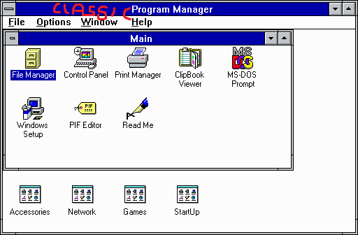

| Classic Shell http://www.classicshell.net/forum/ |
|
| Not classic enough http://www.classicshell.net/forum/viewtopic.php?f=13&t=7903 |
Page 1 of 1 |
| Author: | darkhog [ Sat Sep 16, 2017 5:31 am ] |
| Post subject: | Not classic enough |
I want this to be a thing:  |
|
| Author: | Gaurav [ Sat Sep 16, 2017 6:31 am ] |
| Post subject: | Re: Not classic enough |
What usability benefits does it give over the Windows 95 design? None whatsoever. You can create Explorer folders with those names and shortcuts and access them from your Desktop. So it's already there in the OS. One of the big usability improvements with the introduction of the Start Menu in Windows 95 was that it appeared on top of everything else so you didn't have to minimize any windows. Just one click on the Start button was required and then some hovering to get to your program (if you used submenus). The Program Manager is objectively inferior: it requires far too many clicks to navigate between the various program groups with multiple overlapping windows and lots of clicks to launch anything if another program is focused. Even the present day Explorer with its single document interface is better than Program Manager but the Start menu trumps them all. Besides these arguments, coding another project that requires such a huge effort to pretty much do the same thing is out of the question. |
|
| Author: | Splitwirez [ Sat Sep 16, 2017 8:37 am ] |
| Post subject: | Re: Not classic enough |
Gaurav wrote: What usability benefits does it give over the Windows 95 design? None whatsoever. You can create Explorer folders with those names and shortcuts and access them from your Desktop. So it's already there in the OS. Correct me if I'm wrong, but this sounds more like a nostalgia-driven request to me... |
|
| Author: | darkhog [ Sun Sep 17, 2017 3:29 pm ] |
| Post subject: | Re: Not classic enough |
Gaurav wrote: What usability benefits does it give over the Windows 95 design? First of all, it allows to have a window ("group") open if you use certain programs often. Another thing is that in huge menu that you need to enable scrolling for because it takes multiple columns otherwise it is advantageous to get to certain program quickly (well, quicker than if you'd have to scroll through all the items) as program groups are arranged in a grid instead of a list. And while yes, I could open "programs" folder inside an explorer (it's a folder full of lnk files anyway, some of which are in subfolders), the Explorer has unnecessary clutter, even if you use classic explorer, namely ribbon and directory tree on the left. In short, if we'd go with Win3.11 comparisons, it's more of a Winfile.exe than Progman.exe. Tbh, in part it is a nostalgia thing, but the reasons outlined above are more important. Not to mention if "Classic Program Manager" would become a full-on shell replacement, this would mean saving some memory on lower-end machines. Not necessary by any means, but it'd be cool none-the-less. |
|
| Author: | Anixx [ Mon Sep 18, 2017 3:25 am ] |
| Post subject: | Re: Not classic enough |
If you want Program Manager, here it is: http://chorusofone.no-ip.org/Computerst ... ogman.html |
|
| Author: | darkhog [ Mon Sep 18, 2017 7:09 am ] |
| Post subject: | Re: Not classic enough |
Sure, but this one is unsupported and may fail at any modern Windows since it was last updated circa windows xp. Also the instructions given are quite confusing. No, what I want is something that would be a replacement written from scratch. I would do it myself, but unfortunately my coding skills are not there yet and can't learn necessary things to develop it myself in a reasonable amount of time (not to mention I'm kinda behind in work code too and need to catch up with that). //edit: Emphasis mine. Quote: Another Note- October 24, 2010: My mother recently bought a new laptop with Windows 7 64-bit. Program Manager works fine on it, I have not tried setting it as the default shell though. As Program Manager is a very old 32-bit program with it's own icon rendering system built in, it does not recognize icons in 64-bit exe and dll files in Windows 7, interestingly enough, though, it can read icons from 16-bit programs without any trouble. That does throw it out the window for me completely since I use 64bit apps a lot. |
|
| Page 1 of 1 | All times are UTC - 8 hours [ DST ] |
| Powered by phpBB® Forum Software © phpBB Group https://www.phpbb.com/ |
|